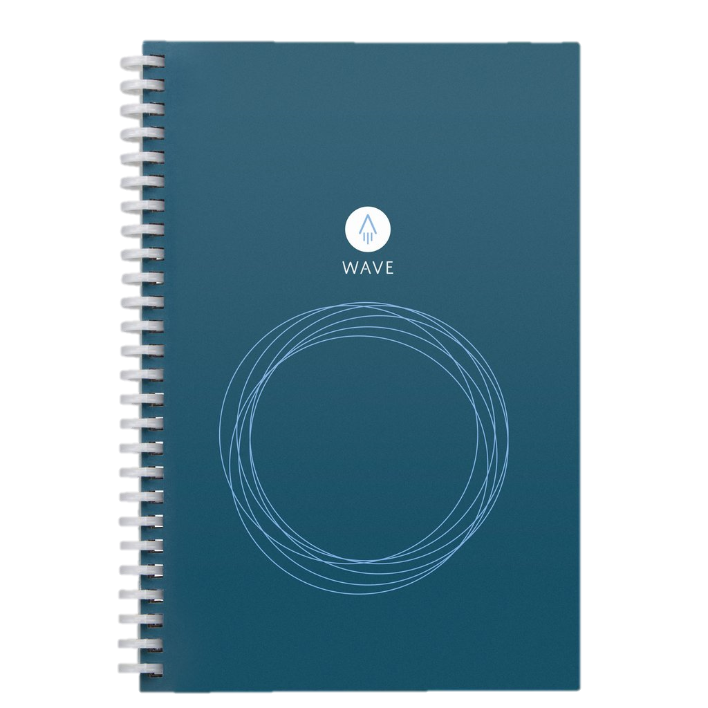

Rocketbook Wave
La compañía tambien cuenta con un segundo cuaderno reusable y ecológico llamado “Wave”, el cual utiliza un concepto muy similar al del Rocketbook Everlast, en este caso se siguen teniendo que usar las mismas plumas (pilot frixion pen) pero en lugar de borrar las páginas indiviualmente; este cuaderno se calienta en el microondas durante 2 minutos con una taza de agua para que se pueda borrar. En comparación al otro cuaderno tiene una gran desventaja, pues este solo se puede borrar 5 veces. Tiene un costo de $27 Dolares y fué el primer lanzamiento de la empresa |
 |